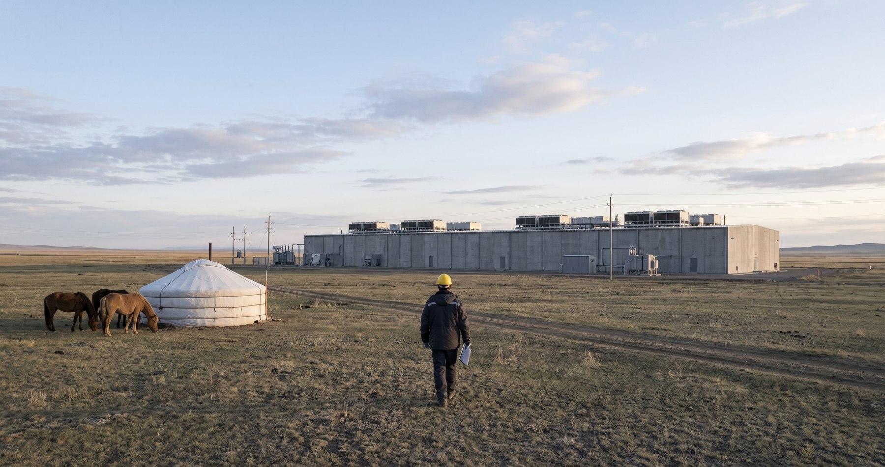

What Does AI 2040 Teach Enterprise AI Governance?
What does AI 2040 teach enterprise AI governance?
Count everything, then check a sample yourself instead of trusting the report. The AI Futures Project’s Plan A builds that for frontier AI across the whole world, starting with an inventory of computing power. Inside a company the same work starts with an inventory of AI use cases and evidence traced back to its source.
Space aliens at Philz
An old friend and I served together on the San Bruno Education Foundation board. After every monthly meeting we would end up standing in the parking lot next to our cars, deep in a conversation about technology or politics, before anyone got around to leaving. When my friend retired from the foundation, those conversations stopped. So I was delighted when he reached out this month and asked if I wanted to sit down for coffee at our local Philz.
My friend worked at Google early enough to use its chatbot internally, back when it was still called Bard. Somewhere in our second hour of conversation he told me about something he did with it.
There is a classic puzzle in language research called a Winograd schema. My friend’s example: The city council rejected the permit submitted by the protesters because they were worried about possible damage. Who is “they”? The council. Now change the ending: …because they had been too violent in the past. Now “they” is the protesters. Nothing in the sentence tells you which. You know because you know how city councils and protests work.
His example is a close cousin of the original. Terry Winograd used councilmen, demonstrators and a permit in 1972, and Hector Levesque turned puzzles like it into a formal test of machine intelligence in 2011.1 For almost fifty years they were held up as evidence that a system reading only the sentence could not understand it, because the answer is not in the sentence. Around 2019, language models started passing them with better than 90 percent accuracy.2
So my friend gave Bard a Winograd schema, and it got it right. He was not impressed. The only schemas he knew were published ones, and published ones were almost certainly in the training data. The model was not reasoning about councils and protesters. It was remembering an answer key.
So he wrote his own. Space aliens came to Earth and did this and that, with pronouns scattered through every sentence, in combinations no paper had ever printed. It still worked them out. That was when he decided, in his words, “okay, now we’re on to something.”
When I got home, his story was still on my mind, because it holds a useful idea about testing AI. Testing an AI system with evidence it has already seen is like giving a student the answer key before the midterm.
The engineer who thought it was alive
A few minutes later my friend brought up a news story about a Google engineer who believed its chatbot was conscious.
That was Blake Lemoine. In June 2022 Google put Lemoine on paid leave after he claimed LaMDA, the conversational model that came before Bard, was sentient.3 Just before he lost access to his account he sent a message to a 200-person internal machine learning mailing list with the subject line “LaMDA is sentient.”4 Google fired him on July 22, 2022, calling his claims “wholly unfounded” and citing its employment and data security policies.5
I don’t think Lemoine was right, but I started thinking about how the question got settled. It was decided inside one company, by that company’s own review, with the evidence on that company’s servers. Nobody outside could rerun his conversations or test the model with questions of their own. Whatever the right answer was, the only party able to check it was a party with a stake in the answer.
That is the space-alien problem at institutional scale. When the only evidence available is evidence the system’s owner controls, outsiders are left taking the owner’s word for it.
Then I asked my friend whether he had been following AI 2027 and AI 2040 from the AI Futures Project. He wasn’t familiar with them.
A plan for the whole world
In April 2025, the AI Futures Project, a nonprofit led by former OpenAI researcher Daniel Kokotajlo, published AI 2027, a month-by-month scenario in which AI systems learn to do AI research and progress snowballs into a US-China race.6 It has two endings. In one, humans lose control. In the other, they slow down and stay in control.
On July 9, 2026, the same group published AI 2040: Plan A.7 The authors call it “primarily a recommendation, not a prediction.” Its core proposal is an international deal, starting with the United States and China in 2029, that makes AI research public, brings dozens of companies to the frontier instead of one or two, pauses at the level of top human experts in 2035, and only scales to superintelligence in 2040. Without a deal, they expect fully automated AI research around 2030.
When I read about it a few months ago, my first reaction was that I wished this debate were a bigger part of the conversation on the world stage, not only in the United States but in every country building or buying these systems. Careful development is a question countries should be working through now, instead of waiting until the last minute.
My second reaction was that it had little to do with my job. My week involves testing different technologies and tracking an inventory of AI use cases, not chip export controls. But I follow the public material on this closely, and the more I read about how Plan A is supposed to work, the more it looked like a solid control framework.
It starts with an inventory. The deal begins by counting computing power. Major datacenter owners and chip suppliers declare large purchases and sales, and each side sends inspectors to the other’s sites. The stated goal is confidence that neither side “isn’t hiding more than about 1% of AI compute.”7
Then it samples instead of trusting. Datacenters can keep running approved models, but verification devices confirm they are not secretly training new ones by recomputing “a random sample of a small percentage of the workloads.”7 Why? You do not take the operator’s word for what the chips are doing. You rerun a piece of the work yourself, on a sample the operator did not choose.
The builder carries the burden of proof. Before a more capable model is deployed, its developers must make a safety case, and the case has to survive scrutiny from rival companies and outside auditors.7 The people who want to ship are the ones who have to show it is safe.
The monitors answer to someone else. Because research is public, “rival companies, third-party auditors, etc., can notice and raise the alarm.”7 A reviewer who does not work for the team under review is harder to talk out of a finding.
Cheating has to cost more than complying. Under the authors’ “mutually assured compute destruction,” each side builds its new datacenters where the other could seize them: China’s in Canada and America’s in Mongolia. If the deal collapses, each owner destroys its own compute rather than let it fall into the rival’s hands.7 To be clear, I am not recommending that anyone wire a datacenter to blow up. Honestly, it is easier to imagine today’s companies and countries rationalizing dangerous risks as necessary progress than agreeing to anything like this. The principle survives the change of scale, though: a control holds when breaking it costs more than following it.

And it admits a blind spot. The authors acknowledge that research needing little compute “is not transparent and therefore probably won’t be regulated at all.”7 Every company has the same gap. In June I wrote about where it shows up inside an organization, and the name for it is shadow AI.
My Monday
Part of my job is keeping an inventory of AI use cases and reporting to audit leadership every week on what has come in, so they can plan new use cases into future audit coverage. Plan A begins by counting compute because nothing after that step works without it. You cannot sample, test or assign an owner for something nobody has counted. My weekly AI inventory report is not glamorous, but important audit coverage depends on it.
Counting is the first step. Checking comes after it.
I recently helped with a walkthrough of one of those use cases. A team uses an LLM-based tool to suggest standard contract language. A person has to accept each suggestion before it goes into the draft, and the finished contract then needs approval from two more levels of reviewers before it can go to a customer. Three human checkpoints. On paper that is a well-designed control, and the tool did a good job. It made the person using it faster.
Here is the part you might already be experiencing… The better the AI’s suggestions get, the easier they are to accept, and an accept button that is almost always pressed starts to behave like a rubber stamp. The two review levels downstream are then reviewing a draft whose clauses no person chose so much as approved. The walkthrough had no data on how often anyone rejected or edited a suggestion, because the tool did not report it. Our feedback to the business was to work with the vendor to start collecting it. That rejection and edit rate is the evidence of how the first checkpoint is operating, and it helps answer two questions: how good is the LLM, and how engaged is the person reviewing it? Until it exists, we know the control was designed with three checkpoints, and we have only anecdotal information about how hard the first one pushes back.
I wrote about the AI-to-AI version of this problem in August: a check that runs is not the same as a check that proves anything. The contract tool is the AI-to-human version. Agreement is cheap, and an approval rate near 100 percent can mean the tool is excellent or that nobody is looking.
I am on the other side of this as well. I use Microsoft Copilot every day, in Word and Excel and on its own, and it has changed how I read systems I did not build. For example, on a recent review of a reporting process, I gave it a dozen SQL scripts and a dozen XML configuration files and asked it to explain, in plain business language, how a Python script used a JSON instruction file to bring them together into one process. Copilot can take in all of those files at once, which gets me to a working picture far faster than reading every file cold, and it is good at pointing out themes and the places that need more research.
But Copilot’s explanation is where my testing starts. For that process, the critical step was taking samples and tracing them from their source through to the final report. That is my friend’s test in audit form. The model gave me an account of how the process works, and I checked that account against data the model did not produce and could not have seen.
No template is coming
The first version of this post, which I built with Claude from a voice session, cited SR 11-7. For fifteen years that Federal Reserve letter was the reference point for model risk management, the discipline of reviewing a model before a bank relies on it. When I had Claude check every claim against primary sources, it came back with news I had missed: in April 2026, the Fed, OCC and FDIC replaced SR 11-7 with SR 26-2.8
The new guidance is clearer and more risk-based. It also says, in footnote 3, that generative and agentic AI models “are not within the scope of this guidance,” and that a bank’s own risk management and governance practices should determine the controls for them.9
Europe moved in the same direction on timing. The EU AI Act treats AI used to recruit or screen job applicants, and to evaluate creditworthiness, as high-risk.10 Those obligations were due in August 2026. The EU’s Digital Omnibus, adopted this summer, moved them to December 2, 2027.11
I do not read either change as a retreat. Generative models are moving fast, and a regulator that writes detailed rules for them this year will be rewriting them next year. But the practical effect for anyone running a program is the same. For now, two of the most developed rulebooks have handed the hardest AI cases back to each firm.
The frameworks are still there. The NIST AI Risk Management Framework organizes the work into Govern, Map, Measure and Manage, and describes Govern as a cross-cutting function “infused throughout” the other three.12 ISO/IEC 42001 requires an AI system impact assessment alongside the AI risk assessment.13 Both tell you what a program should contain. Neither counts your use cases or pulls your sample.
One use case, start to finish
Here is how I would take a single use case through that work. The example is an AI tool that screens job applicants, because many companies already use one and the EU calls it high-risk.
It starts at intake. Before anyone signs a contract, the use case goes into the inventory: what the tool does, who owns it, which vendor and model it runs on, what data it touches, and who is affected by its output. For a screener, the affected people are applicants who will never see the tool and cannot appeal to it.
Then I rate the inherent risk, before any controls. This one rates high on almost every factor. It influences a decision about someone’s livelihood. It processes personal data at scale. It is hard to explain why one résumé ranked above another. It sits inside a named high-risk category. Autonomy is easy to misjudge. A screener that ranks a thousand applicants and shows a recruiter the top twenty is making nine hundred and eighty decisions on its own, whatever the process diagram says about a human in the loop.
The rating assigns a tier, and the tier drives everything after it. A low-tier tool might need only an approved vendor and user training. This one is high.
High tier means controls matched to the risk, and this is where Plan A’s lessons apply directly. Test for accuracy and bias on applicants the vendor has never seen, because the vendor’s own test set is the published Winograd schema. Have a person review a sample of rejected applications, chosen at random, not by the tool. Track how often recruiters override the ranking from the first day, because the contract walkthrough was a reminder that asking a vendor for a missing report after launch means waiting for it, with no promise it arrives. Monitor for drift, keep an off switch plan that is tested regularly, and require sign-off from the accountable risk owner before go-live. That package is the enterprise safety case.
Last, someone with authority formally accepts the remaining risk, and the use case is reassessed on a schedule and whenever something material changes. A new model version from the vendor counts as material, even when nothing on the screen looks different.
An interesting question
Plan A asks two superpowers to accept checks that neither of them controls. The authors are candid that the deal itself is “not what we actually expect to happen.”7 Inside a company the ask is much smaller, and nobody has to switch off a datacenter. It is still the same ask: count everything, test with evidence the system has not seen, and give the check to someone who does not answer to the team being checked.
The AI systems I find easiest to imagine governing well are the ones built to be checked: narrow, well-defined scope, verifiable outputs with clear instructions for reperformance, documented data lineage, and logic a person can interrogate and explain. I’m optimistic, because I’m already seeing AI tools chosen for that property at least as often as for their capability.
Lemoine’s question was settled by the one party that could see the evidence. Which of the tools in your inventory could pass my friend’s space-alien test today, and how would you know?
Thanks to my brilliant friend for the coffee, the space aliens, and the conversation that started this. I have learned a great deal from our conversations over the years, and I value every one of them.
Sources
- Terry Winograd’s 1972 councilmen example and the Winograd Schema Challenge: Hector J. Levesque, Ernest Davis and Leora Morgenstern, “The Winograd Schema Challenge,” KR 2012 (AAAI); challenge proposed by Levesque in 2011, per Commonsense Reasoning. ↩
- Vid Kocijan, Ernest Davis, Thomas Lukasiewicz, Gary Marcus and Leora Morgenstern, “The Defeat of the Winograd Schema Challenge,” Artificial Intelligence 325 (2023), arXiv:2201.02387. ↩
- Nitasha Tiku, “The Google engineer who thinks the company’s AI has come to life,” Washington Post, June 11, 2022; also New York Post, June 12, 2022. ↩
- Washington Post, June 11, 2022, as quoted in “Google fires engineer who claimed LaMDA chatbot is a sentient person,” Ars Technica, July 2022. ↩
- Reuters, “Google fires software engineer who claimed its AI chatbot is sentient,” CNBC, July 23, 2022; Washington Post, July 22, 2022. ↩
- AI Futures Project, AI 2027, April 3, 2025, ai-2027.com. ↩
- Thomas Larsen, Romeo Dean, Brendan Halstead, Eli Lifland, Ryan Greenblatt and Daniel Kokotajlo, AI 2040: Plan A, AI Futures Project, July 9, 2026, ai-2040.com (PDF). All quotations from the PDF. ↩
- Board of Governors of the Federal Reserve System, OCC and FDIC, SR 26-2, Revised Guidance on Model Risk Management, April 17, 2026, superseding SR 11-7 (April 4, 2011). ↩
- SR 26-2 attachment, Revised Guidance on Model Risk Management, footnote 3. ↩
- EU Artificial Intelligence Act, Annex III, points 4(a) and 5(b). ↩
- Regulation (EU) 2026/1744 (Digital Omnibus), amending Article 113 of the AI Act. ↩
- National Institute of Standards and Technology, Artificial Intelligence Risk Management Framework (AI RMF 1.0), NIST AI 100-1. ↩
- ISO/IEC 42001:2023, clauses 6.1.2 (AI risk assessment) and 6.1.4 (AI system impact assessment). The standard is paywalled; confirmed through the Cloud Security Alliance’s summary. ↩